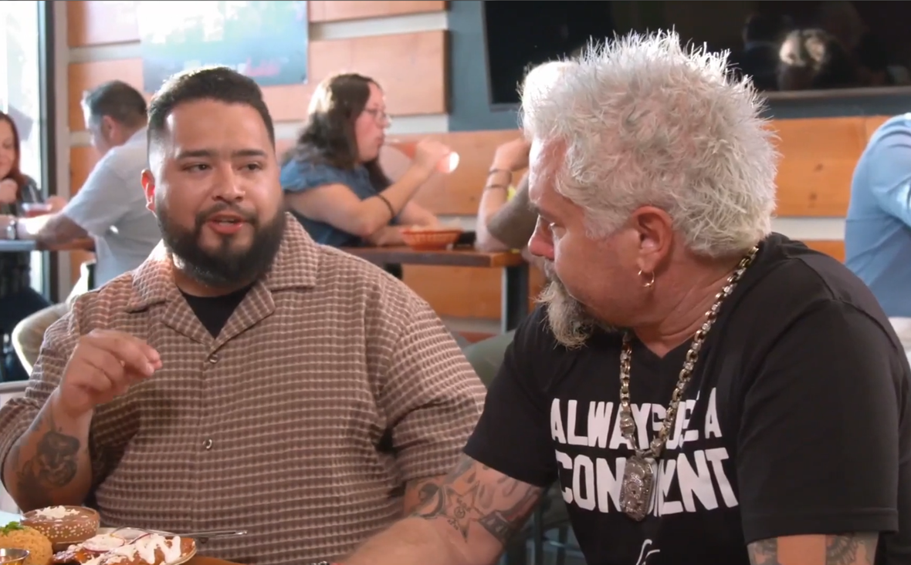
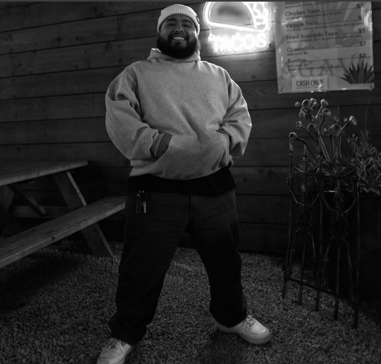

About
Professional Storyteller
I specialize in creating compelling visual narratives around food culture, with featured work on Food Network and collaborations with industry leaders like Guy Fieri. My approach combines culinary passion with technical precision to capture the essence of every dish and dining experience.
Based in the Bay Area, I focus on documenting the region's vibrant food scene—from Michelin-starred establishments to hidden local gems. Each piece tells a story worth savoring.

Portfolio

Recent Content
Featured Collaborations
Food Network Channel
Featured digital content creator for a food network production showcasing signature cuisines.
Collaboration
Collaborated on Food Network features showcasing Bay Area's best food destinations and personalities.
Premium Brands
Partner with leading food and beverage brands for authentic, high-impact content campaigns.
Recognition
Recognized for storytelling excellence and innovative approaches to food content creation.
Let's Create Something Delicious
Follow for daily food stories, behind-the-scenes content, and exclusive collaborations from the Bay Area food scene.
Follow on Instagram